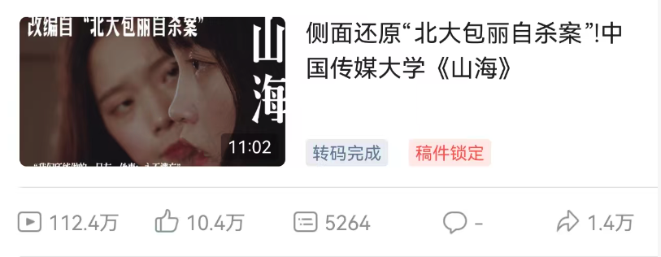

覆盖社区增长、创作者内容、校园渠道与用户激活。
Some Earlier Projects / 部分早期项目
Turning ideas into stories, systems, and momentum.
Selected work across product strategy, community growth, creator programs, content production, and visual systems.
Relevant across roles that connect product, growth, creator/community systems, content strategy, and market storytelling. 适用于需要连接产品、增长、创作者/社区、内容策略与市场叙事的岗位方向。
Earlier projects, organized as a record of foundation and growth. My recent work has advanced further in scope, polish, and strategic depth; role-relevant examples can be shared in conversation. 这里整理的是我的早期项目，呈现了能力基础与成长路径；我近期的作品在复杂度、完成度和策略深度上已有明显提升，可根据岗位方向补充交流更相关的案例。
可按能力线索浏览：点击 Growth、Creator、Product、Content、Visual 或 Credentials 进入对应案例。
覆盖创作者资源、社媒内容、达人合作与社区传播。
连接校园网络、线下活动、合作伙伴与本地增长渠道。
Capability Map
Start with the capability closest to the role.
从岗位最关心的能力入口进入；每个入口会直接筛选出对应案例和材料。
Growth & GTM
Launch, campus channels, community activation, partner-led growth.
PandaPal, SWAP, Insight Fast Recommendation
Creator & CommunityCreator positioning, KOL/KOC resources, audience systems, campaigns.
Influencer Strategy, PandaPal, Legend Co-shooting
Product StrategyBusiness plans, product narratives, recommendation concepts, IA.
PandaPal, Web Strategy, SWAP, Insight
Content & ProductionShort film, video production, pitch videos, content archives.
Di's Spring, Mirror, Legend Co-shooting
Visual SystemsPosters, photography, brand systems, product pages, composition.
Di's Spring, Photography, Web Strategy
Tools & CredentialsMarketing analytics, social tools, digital-marketing foundations.
Google Analytics, Hootsuite
Selected Cases
Selected cases by capability, contribution, and evidence.
案例按能力、个人贡献和可查看证据组织，方便快速判断与岗位的相关性。
Strategic / Operational Work
Product strategy, growth systems, creator/community work, and business planning.
Creative / Visual Work
Content production, public creative work, visual systems, and composition judgment.
Public Platform Work
Public releases, audience metrics, and platform production roles.
公开发布数据、系列节目链接与项目角色，呈现内容制作、项目统筹和跨平台协作经历。

Mount & Sea | 山海
1.124M
views
104K
likes
14K
shares
An archived platform screenshot documents 1.124M views, 104K likes, 5,264 comments, and 14K shares for the original public release. The current link points to a re-upload, so visible public metrics may differ from the original run.
《山海》B站原发布截图记录了 112.4 万播放、10.4 万点赞、5264 条评论和 1.4 万分享；当前可访问链接为重发版本。
iQIYI
A Small Story of Traditional Chinese Medicine | 中医小事
Public links from a documentary interview series around Chinese medicine and cultural storytelling, presented as assistant-director and execution-support evidence.
爱奇艺《中医小事》系列适合证明纪录/文化传播、现场执行和助理导演经验。
Source Preview
Browse selected source materials directly.
视频、PDF、产品计划、策略文档与文件夹均保留公开源材料，可在页面内预览，也可跳转到 Google Drive 查看。
Visual Range
Selected visuals across posters, brand systems, photography, and product pages.
集中呈现产品封面、影像海报、品牌系统、摄影与网站策略，补充展示视觉判断和内容执行能力。
Source Archive
Full Drive groups for deeper review.
页面呈现精选脉络；完整 Drive 文件夹保留作品来源与补充材料，便于进一步查看。
Connect
Open to growth, creator, community, content, and product-operations work.
I work best where creator ecosystems, community growth, content workflows, short-form video, lifestyle products, or cross-cultural GTM meet.
关注创作者生态、社区增长、内容产品、短视频、生活方式产品与跨文化 GTM。